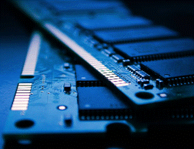

what is the future of computers
is ddr5 the future of ram
this webpage is designed by kusal and dilith and made by dilith the name is renderforest
home
the ram we use these days are called ddr4 ram the meaning of ddr4
is Double Data Rate Fourth Generation Synchronous Dynamic Random-Access
Memory. we use rame to store some kind of programe temporerley
if we do not have ram it will take a lot of time to do something
in the programme.

DDR5 is going to be better than DDR4 in pretty much every different
aspect. Most notably, DDR5 will have a higher
bandwidth with reduced latency, all whilst consuming
less power than DDR4. It will also allow us to have greater RAM
capacity, and therefore a much more powerful laptop or computer

While DDR4 DIMMs top out at 3.2 gigabits per second (Gbps) at a
clock rate of 1.6 gigahertz (GHz), initial DDR5 will
deliver a 50% bandwidth increase to 4.8 Gbps. DDR5 memory
will ultimately double the data rate of DDR4 DRAM reaching 6.4 Gbps.
European researchers have a strong position in a new technology known as
resistive RAM (RRAM) that could soon be replacing flash RAM
in USB drives and other portable gadgets. On the
'semiconductor road map' setting out the future of
the microchip industry, current memory technologies
are nearing the end of the road.
what is gddr6
the meaning of gddr6 is Graphics Double Data Rate gen 6
the gddr6 ram is the memory of a graphics card they
much much muchhhhh ! faster than normal ram and that is
why gddr6 is so expensive than ram you cannot buy gddr6
like ram modules, and you cant upgrade gddr ram, the normal
name of the gddr ram is called vram (video ram)
a picture of a graphics card

do you realy need ram
If you powered up a computer without RAM, it wouldn't
move past the POST screen (Power-On Self-Test). ... Several beeps
coming out of your computer case would accompany it.
This way, your computer would tell you that it lacks RAM and that
it can't boot.
thank for reading my website